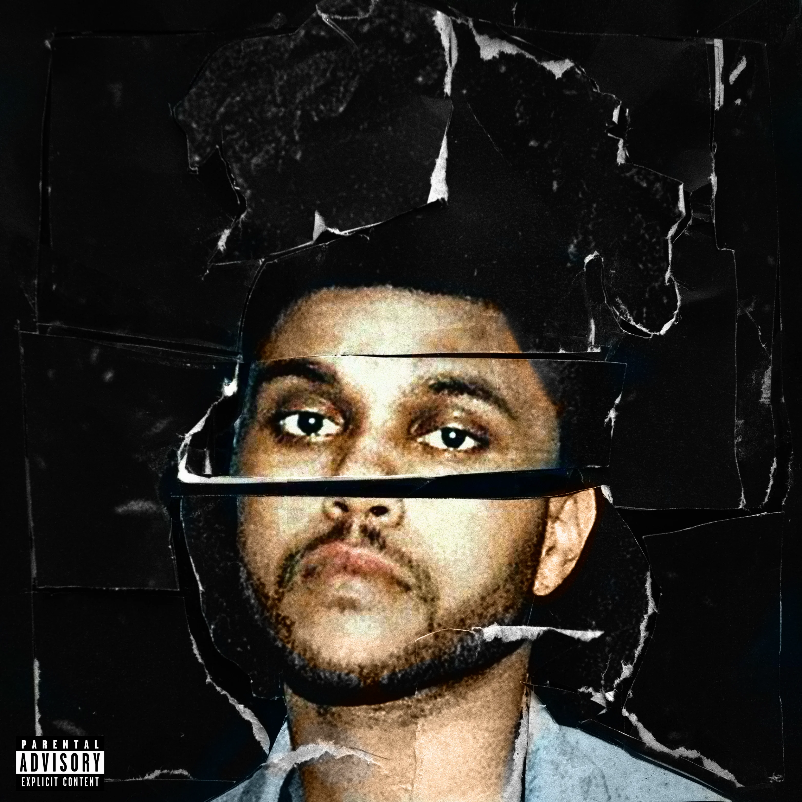

Discographie Sélective

Beauty Behind the Madness (2015)
L'explosion grand public. Un album fusionnant R&B sombre et pop magistrale, porté par The Hills et Can't Feel My Face.

Starboy (2016)
Une ère iconique marquée par une collaboration légendaire avec Daft Punk et un virage résolument électro-pop.

After Hours (2020)
Le chef-d'œuvre synthwave absolu plongeant dans la folie de Las Vegas, incluant le hit planétaire record Blinding Lights.

Dawn FM (2022)
Une expérience d'écoute électrisante conceptualisée comme une station de radio diffusée depuis le purgatoire.